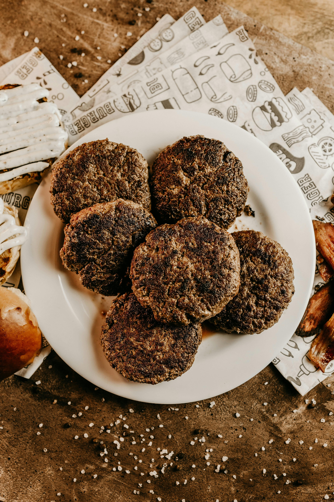

Breakfast Sasuage
This is a simple recipe for breakfast sasuage. I wont touch on how to make links
as that is a different topic all together. You can easily make just bulk or
patties the choice is up to you!
Ingreidents:
- 1 pound ground pork
- 1 teaspoon salt
- 1/2 teaspoon black pepper
- 1 teaspoon dried sage
- 1 teaspoon dried thyme
- 1/2 teaspoon garlic powder
- 1/2 teaspoon onion powder
- 1/4 teaspoon crushed red pepper flakes (optional, for a bit of heat)
- 1 tablespoon maple syrup (optional, for sweetness)
Directions:
- Mix the Ingredients: In a large bowl, combine the ground pork with salt, black pepper, sage, thyme, garlic powder, onion powder, crushed red pepper flakes, and maple syrup (if using).
Mix well until all the spices are evenly distributed throughout the meat.
- Shape the Sausages: Divide the mixture into small portions (about 2-3 tablespoons each) and shape them into patties or links, depending on your preference.
- Cook the Sausage:
- For patties: Heat a skillet over medium heat. Add a little oil if desired.
Cook the sausage patties for about 4-5 minutes on each side or until they are browned and cooked through (internal temperature should reach 160°F/71°C).
- For links: If you prefer links, you can shape the mixture into links and cook them similarly.
- Serve: Enjoy your homemade sausage with eggs, pancakes, or on a breakfast sandwich!
Tips:
- You can customize the spices to your taste, adding more or less of any herb or spice.
- These sausages can be made in advance and frozen for later use. Just cook them from frozen, adding a few extra minutes to the cooking time.